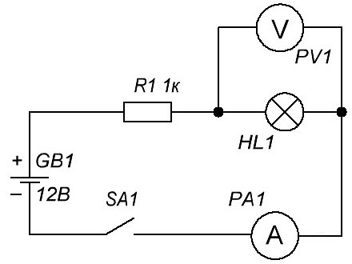
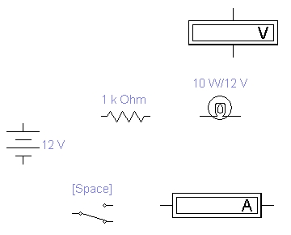
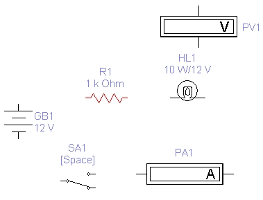
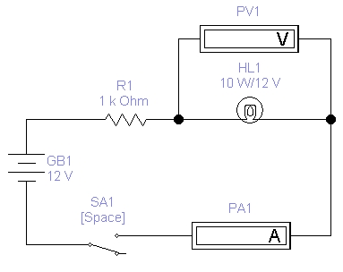

Electronics Workbench
Исследование схемы с лампочкой
в программе Electronics Workbench

Рис. 1 - Схема для моделирования
- Установите на рабочем поле элементы показанные на рис. 2.

Рис. 2 - Элементы на рабочем поле
- Сохраните схему в файле с именем shema-1.ewb.
- Укажите позиционные обозначения элементов (рис. 3)

Рис. 3 - Позиционные обозначения элементов
- Вольтметр разверните на 90° нажатием комбинации клавиш [Ctrl]+[R].
- Соедините элементы как показано на рисунке 4.

Рис. 4 - Соединенные элементы
- Щелчком на переключателе Activate simulation
 запустите расчет схемы.
запустите расчет схемы. - Нажатием клавиши [Пробел] переведите переключатель SA1 в положение замыкания электрической цепи. Подождите несколько секунд до появления окончательного результата.
- В рабочей тетради запишите показания измерительных приборов и состояние лампочки.
- Выключите схему щелчком на переключателе Activate simulation .
- Установите на батареи GB1 напряжение 24 В, на резисторе R1 - сопротивление 50 Ом.
- Щелчком на переключателе Activate simulation запустите расчет схемы.
- В рабочей тетради запишите показания измерительных приборов и состояние лампочки.
- Выключите схему щелчком на переключателе Activate simulation .
- Установите на резисторе R1 сопротивление 15 Ом.
- В рабочей тетради запишите показания измерительных приборов и состояние лампочки.
- Выключите схему щелчком на переключателе Activate simulation .
- Установите на резисторе R1 сопротивление 10 Ом.
- В рабочей тетради запишите показания измерительных приборов и состояние лампочки.
- Выключите схему щелчком на переключателе Activate simulation .
- Проанализируйте результаты и сделайте выводы.